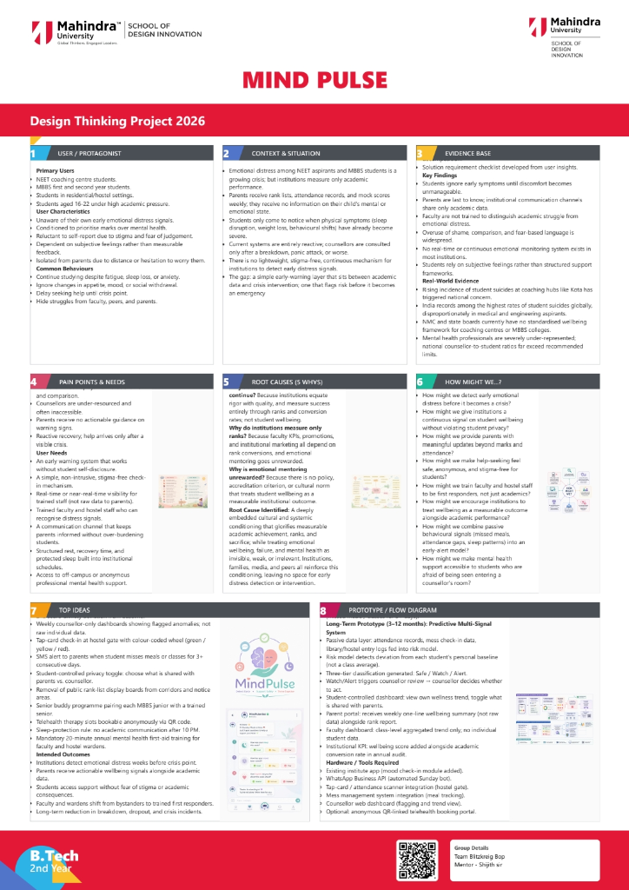

"Parents only find out something’s wrong when sleep, weight, or behaviour has already crashed."
Schools track marks, not minds. NEET coaching centres and MBBS colleges send home rank lists, mock scores, and attendance reports every week, but nobody checks how the student is actually doing.
We are failing to identify the silent struggles of students in high-pressure academic environments. How do we build a simple way for institutions to spot emotional distress early — before it becomes a panic attack, breakdown, or worse?
The transition into rigorous coaching for competitive exams like NEET, or entering MBBS, places unprecedented stress on young minds. They are uprooted from familiar support systems and placed in hyper-competitive ecosystems where their worth is quantified by a weekly rank.
Institutions have streamlined academic tracking with military precision, yet emotional and psychological tracking is entirely non-existent. Students are expected to cope, until they physically can't.
of medical students report symptoms of depression or anxiety globally.
Higher risk of burnout in coaching environments compared to standard schooling.
Most interventions happen only after physical symptoms manifest (weight loss, insomnia).
Parents receive endless data on marks, but zero data on mental well-being.
Students hide their distress out of fear of disappointing parents or seeming "weak".
Counselors (if present) are only utilized post-crisis, not for early detection.
Tracing the systemic issues back to their origins to identify the deepest levers for change.
We generated 540 distinct solutions across 5 "How Might We" statements through 6 rounds of rapid brainstorming. Click below to view the synthesis of these ideas into our Top 10 Core Solutions.
View 540-Idea Brainstorming Process →Core idea: A 30-second daily self-assessment that catches deteriorating mental states early, before they escalate to crisis.
How it works:
A minimal 3-question survey delivered via WhatsApp bot (or a physical card at coaching centres). The three questions are deliberately simple to maximize compliance — mood (1–5 scale), sleep hours last night, stress level (1–5 scale). A backend script tracks each student's rolling 7-day average. When scores cross a threshold (e.g., mood ≤2 for 3+ consecutive days, or sleep <4 hrs for 5+ days), the system auto-flags the student to an assigned counsellor for outreach.
Why it works for our problem:
Addresses the root cause that students don't recognize their own deterioration until crisis hits. Passive monitoring removes the burden of self-initiated help-seeking — which is exactly what stigma blocks.
Implementation steps:
Cost: ~₹0–5,000 for pilot (WhatsApp API free tier, existing counsellor time).
Core idea: Student-led weekly check-in circles that normalize emotional conversation without requiring faculty or clinical infrastructure.
How it works:
Groups of 6–8 students meet for 15 minutes weekly. One trained student-facilitator (rotating role) runs a structured format — each person answers two prompts ("one thing that drained me this week" + "one thing that kept me going"). Cross-batch buddy pairing means a 2nd-year MBBS student is paired with a 1st-year, so juniors get realistic mentorship instead of toxic competition. No faculty present — psychological safety depends on the absence of authority figures.
Why it works:
Our 5-Whys analysis surfaced social isolation and peers being competitors, not friends as root drivers. This restructures peer relationships from competitive to collaborative without forcing it — the structure itself does the work.
Implementation steps:
Cost: ~₹2,000–5,000 for facilitator training materials. Self-sustaining after.
Core idea: A designated physical space where students can decompress without explanation or appointment — destigmatizing the act of "needing a break."
How it works:
A small room or partitioned corner in the coaching centre/college library. Inside: a journaling station with prompt cards ("write one thing you're not allowed to say out loud"), printed breathing exercise guides (4-7-8 technique, box breathing), tactile items (fidget cubes, stress balls, clay), low lighting, no clocks visible. The space has no signup, no sign-in, no monitoring — students walk in, stay 5–20 minutes, walk out. The absence of surveillance is the feature.
Why it works:
Our insight identified that students have no safe space to express emotions — homes are pressure-cookers, hostels are competitive, classrooms are performative. A neutral physical space breaks that pattern. Crucially, using it doesn't require labeling oneself as "struggling," which is what currently blocks help-seeking.
Implementation steps:
Cost: ~₹8,000–15,000 one-time setup; ~₹1,000/month maintenance.
Core idea: A multi-year, multi-channel storytelling campaign that systematically dismantles the cultural belief that NEET/MBBS is the only legitimate path to a successful life.
How it works:
This operates on three layers simultaneously, because the root cause — society valuing only exam scores — lives in three places: media narratives, school counselling, and family expectations. Each layer needs a different intervention.
Layer 1 — Media: A YouTube/Instagram series featuring alumni who didn't clear NEET but built meaningful careers — clinical psychology, biotechnology, public health, medical writing, healthcare entrepreneurship, hospital administration, biostatistics. Each episode follows one person: what they thought their life would be at 18, what it actually became, and whether they'd change anything. Honest, not sanitized. No "everything happens for a reason" framing — instead, "here's what I built from where I landed."
Layer 2 — Schools: A curriculum module for Class 9–12 career counsellors that maps 40+ careers in healthcare and life sciences beyond MBBS. Includes alumni guest sessions, salary data, day-in-the-life videos. The point isn't to discourage NEET — it's to make sure students choose it from awareness, not from believing nothing else exists.
Layer 3 — Families: Parent-targeted content in regional languages on WhatsApp and YouTube. Short videos featuring parents of non-MBBS healthcare professionals, talking about their initial fears and how they updated their views. Parents trust other parents more than they trust experts.
Why it works:
We correctly identified that prototypes 1–3 treat symptoms, but the source of the pressure is cultural. As long as a 17-year-old believes that not clearing NEET means failing their family and wasting their life, no amount of mood check-ins fixes the underlying terror. This campaign rewrites the social script that creates the terror in the first place.
Implementation steps:
Why this is long-term, not short-term:
Cultural change has a 5–10 year horizon minimum. The first three prototypes catch students currently drowning. This one tries to ensure fewer students enter the water at all.
Cost: ₹15–40 lakh for Year 1 (content production is the major line item). Scales with partnerships and grant funding thereafter.
10 years of clinical experience · NEET aspirants and MBBS students
The primary driver is not pressure alone but the shame students feel when things go wrong in front of parents, peers, and professors. This shame triggers a cascade of anxiety, panic attacks, insomnia, and chronic depression, and amplifies pre-existing conditions like OCD and ADHD.
MBBS students are more self-aware and tend toward chronic exhaustion and depressive episodes. NEET aspirants are more likely to ignore symptoms until they peak as panic attacks. Same triggers, different mechanisms.
In the absence of healthy outlets, students develop harmful coping mechanisms: self-harm, eating disorders, and addictive substances. These are symptoms of a system with no release valve, not personal failures.
Skipping meals, withdrawing from activities once enjoyed, and subtle shifts in social behaviour. Warning signs always start small and compound quietly over time.
Early, proactive counselling paired with peer support from people who understand the specific pressures of NEET and MBBS life. Generic counsellors struggle to build rapport quickly enough. Structured human connection — peer groups, mentorship, faculty check-ins — is the most underutilised intervention. Lifestyle changes only hold if the underlying distress is addressed first.
This is not a willpower problem. These are students who tried the hardest in a system that built no room for failure. The competitive exam funnel creates psychological harm by design. Adding a helpline to an unchanged system is not mental health support.
